Luke Naoki Salembier 🎏
TSTI2D, Lycée polyvalent Jean Moulin
Thézan-les-Béziers, France
Bonne question
Bonne question
Langues
Français
Anglais
Japonais
Espagnol
Qui suis-je ?
élève en TSTI2D3 / Spécialité SIN
années 2024/2025
Cette année je suis en terminale STI2D3 avec Spécialité SIN, j'aimerais apprendre à coder pour des projets personnelles et professionnelles.
Un sportif... et un geek
Depuis 2007 (ma naissance)
Je me considère comme un sportif confirmé et expérimenté car j'entame ma 10ème année de basketball à
l'ASCB
, où j'ai remporté plusieurs médailles et championnats dont 1 coupe départementale mais aussi car je suis doué dans le sport en général.
 Je suis un geek car j'adore jouer aux jeux vidéos et j'espère pouvoir un jour créer mon propre jeu, j'adore les films, séries, animes, mangas...
J'adore les films du studio ghibli, mon film préféré est Mon voisin Totoro, ou alors les séries animes comme Bleach,...
J'adore également les jeux vidéos de FromSoftware, mon jeu préféré est Sekiro: Shadow die twice
.
Je suis un geek car j'adore jouer aux jeux vidéos et j'espère pouvoir un jour créer mon propre jeu, j'adore les films, séries, animes, mangas...
J'adore les films du studio ghibli, mon film préféré est Mon voisin Totoro, ou alors les séries animes comme Bleach,...
J'adore également les jeux vidéos de FromSoftware, mon jeu préféré est Sekiro: Shadow die twice
.
Un voyageur et un "aventurier"
Depuis toujours
Depuis ma plus tendre enfance j'adorais explorer les forêt, les rivères, les montagnes, j'adorais attraper des insectes, des animaux marins et d'eau douce ou encore ramasser des fossiles, des coquillages ou des fossiles que je trouvais par terre et que je trouvais beau. Aujourd'hui encore j'ai gardé cette passion, j'aime toujours autant me promener dans la nature et observer la faune et la flore (une des raisons pourquoi je rêve d'avoir un aquarium ou un terrarium chez moi), le danger ne me fais pas peur (sauf si je tombe sur un ours). Jusqu'à aujourd'hui, j'ai eu l'occasion de voyager dans quelques pays autour du monde, surtout au japon avec ma famille car je vais rendre visite à ma famille du côté de ma mère, c'est pour cela que je parle couramment le japonais et que je suis en train d'apprendre à le lire et écrire . J'ai aussi voyagé en Espagne même si mon niveau d'espagnol n'est pas très prodigieux.
 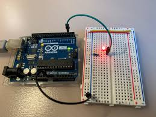
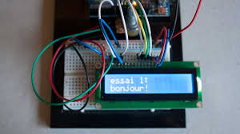
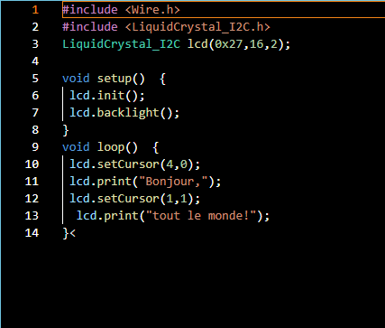
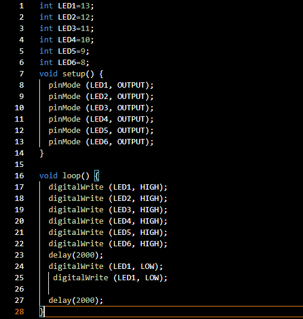
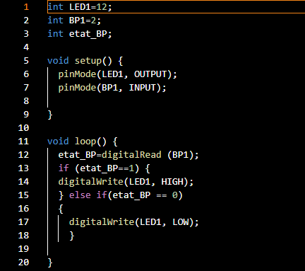
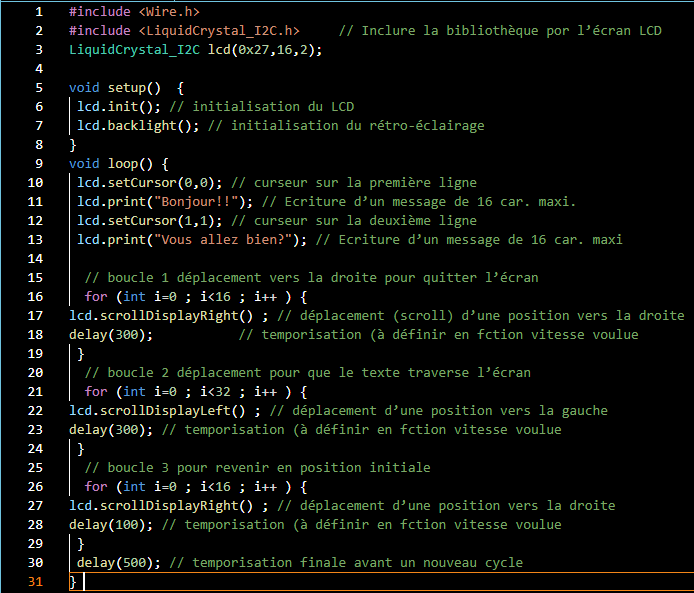
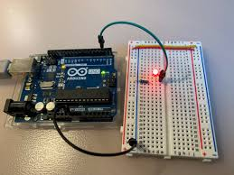
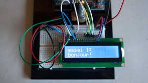
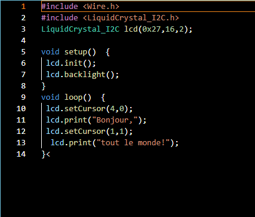
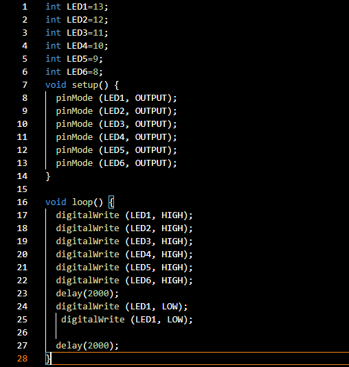
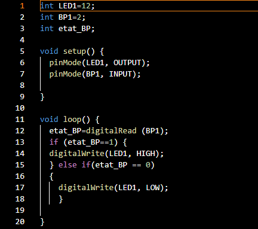
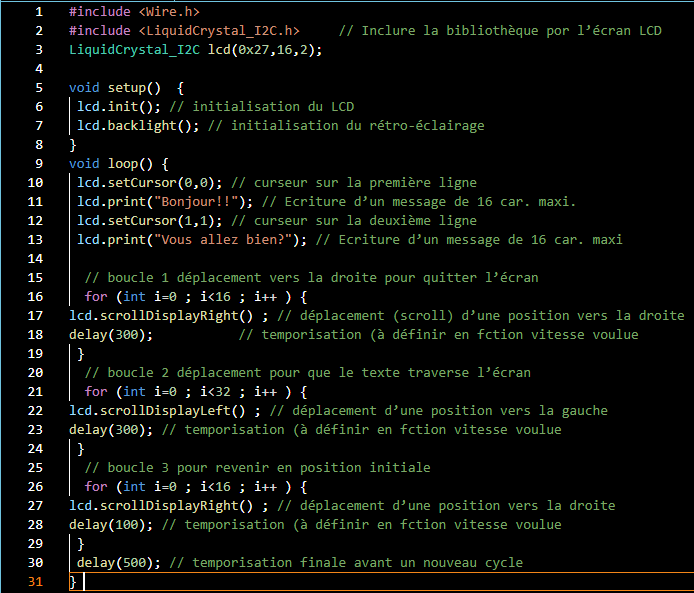
 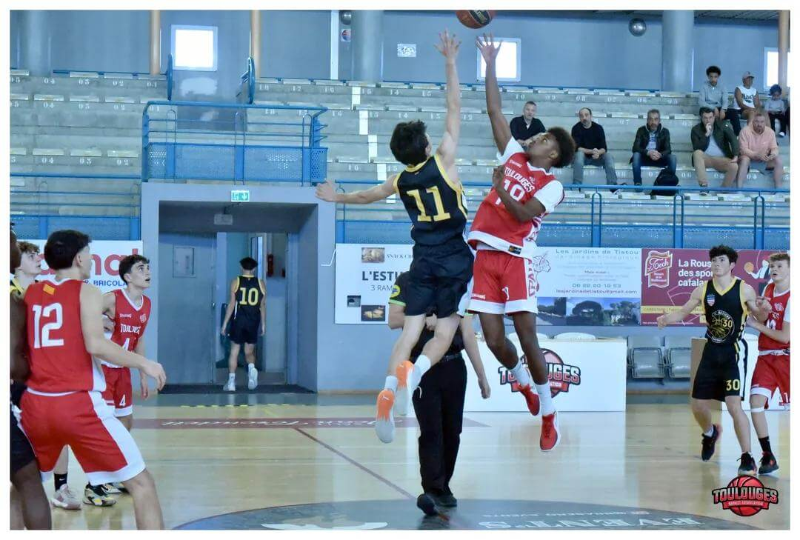
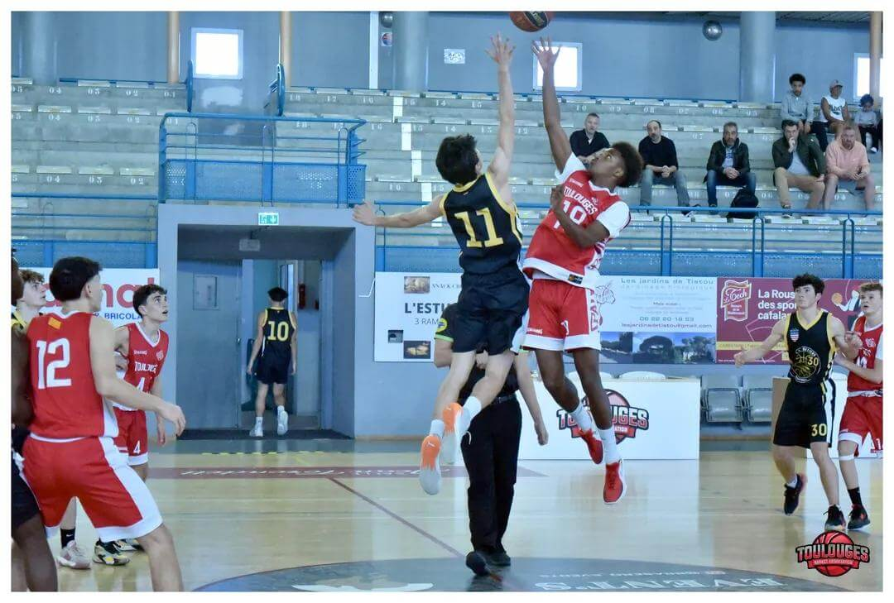